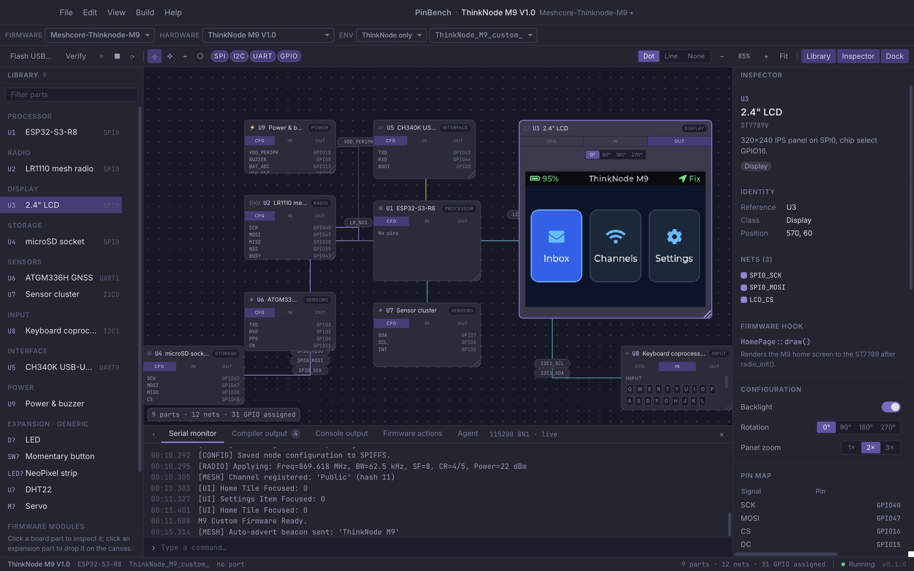
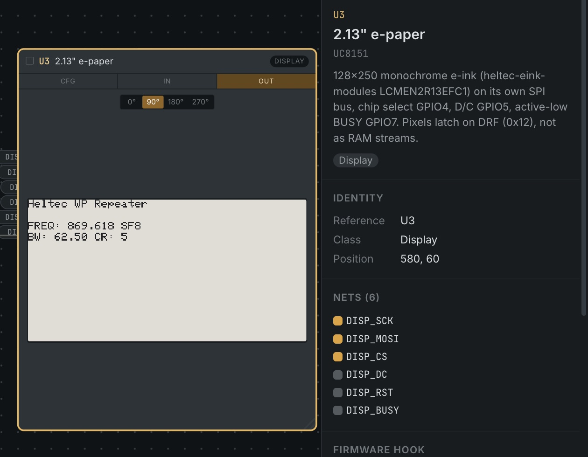
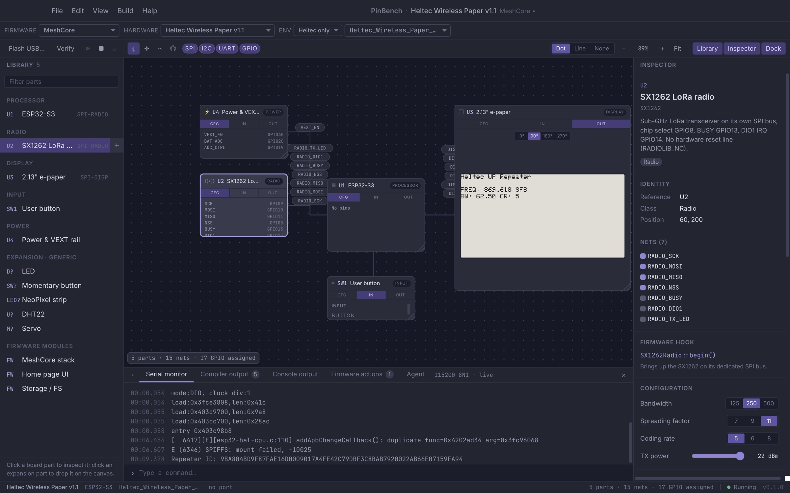

RUNS THE REAL BINARY
Open a PlatformIO folder and press ▶. PinBench builds it, flashes the image into a patched QEMU, and boots it. The binary is the same one you'd flash to a board, with no mocks and no special build.
A testbed for embedded hardware. Your real firmware, on an emulated board, with every peripheral on the bench.
PinBench is a desktop testbed for embedded devices. Describe a board as parts and pins, open your PlatformIO project, and PinBench boots the binary on an emulated ESP32. Every part on the board (displays, radios, Ethernet, touch, keyboards, buttons, card readers) gets a panel you can configure, poke and watch. Develop and test before the hardware is on your desk, or without it at all.
macOS on Apple Silicon · free and open source (MIT)



Open a PlatformIO folder and press ▶. PinBench builds it, flashes the image into a patched QEMU, and boots it. The binary is the same one you'd flash to a board, with no mocks and no special build.
Displays show the real framebuffer. Radios show what the firmware transmits. Ethernet gets a real network. Every panel shows the part's bus, pins and the firmware call that drives it. New parts plug in through a small device-model API.
Press buttons, type on keyboards, touch screens, insert SD cards, present RFID tags and inject radio packets. Each input raises the same pins and interrupts real hardware would, so the firmware's own handlers run.
The board is a canvas of parts and nets. Move, add and rewire them, verify the pin map against the board's rules, and generate a C pin header from it.
PinBench never edits your source. When the hardware and the firmware disagree, it says what has to change, in a dock tab and in .pinbench/actions.md, so you or your coding agent can fix it.
A built-in MCP server lets a coding agent build and boot the firmware, read and write the serial port, inject radio traffic and read back device state. It's the same loop you use, driven by the agent.
A board is a JSON file of parts, buses and pins, so any ESP32-S3 or ESP32-C6 design can be described. Add your own.
PATH (it isn't bundled)